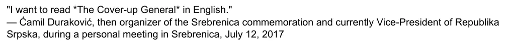

Prueba · Correo electrónico
Giltay a Ćamil Duraković, 27 de mayo de 2025
El pasaje
«“Quiero leer The Cover-up General en inglés”. — Ćamil Duraković, entonces organizador de la conmemoración de Srebrenica y actualmente vicepresidente de la República Srpska, durante un encuentro personal en Srebrenica, 12 de julio de 2017» La cita tal como se sometió a aprobación. El primer párrafo del correo electrónico expone las circunstancias: un encuentro personal con el documentalista Omer Edo Hadrović y Giltay, en el hotel donde se alojaba Giltay en Srebrenica, el 12 de julio de 2017, el día después de la conmemoración. El correo pone el título del libro entre asteriscos y la cita entre comillas dobles en una línea aparte, con la atribución debajo; aquí el título figura en cursiva en lugar de entre asteriscos, la cita va entre comillas de segundo nivel y las líneas se han unido. Traducido del inglés; el texto original figura a continuación. The Cover-up General es el título de la edición inglesa del libro El general del encubrimiento.
Texto original
“‘I want to read The Cover-up General in English.’ — Ćamil Duraković, then organizer of the Srebrenica commemoration and currently Vice-President of Republika Srpska, during a personal meeting in Srebrenica, July 12, 2017”

Por qué importa este documento
Este correo electrónico describe el encuentro personal en el que se basa la cita de la sección de voces, y está dirigido al hombre que estuvo presente. Giltay reproduce la frase palabra por palabra y pregunta a Duraković, en su dirección de correo oficial de vicepresidente, si tiene alguna objeción a que se utilice. Giltay añade que legalmente tiene derecho a utilizar la cita, pero que valora el consentimiento de Duraković, dados su cargo y lo delicado del tema. No llegó ninguna respuesta y, por tanto, tampoco ninguna objeción. En el correo constan el encuentro, la fecha, el lugar, la tercera persona presente y la formulación que se sometió a Duraković, pero no consta que este la aprobara.
Procedencia
- Documento
- Correo electrónico, una página
- Remitente
- Edwin Giltay
- Destinatario
- El gabinete de Ćamil Duraković, vicepresidente de la República Srpska
- Fecha
- 27 de mayo de 2025
- Asunto
- «Request for Approval to Use Your Quote about The Cover-up General» (solicitud de autorización para utilizar su cita sobre El general del encubrimiento)
- Respuesta
- No recibida
- También mencionado en
- La carta de Giltay del 20 de mayo de 2026 que acompañaba el envío del libro y que da el nombre del hotel: Motel Alić
- Idioma
- Inglés
Citado en: la sección de voces bajo el epígrafe «Repercusión mundial».
Ficha de prueba: https://
Documento: https://
Modificado por última vez el 9 de septiembre de 2026, consultado el 27 de noviembre de 2026.

Esta página es una ficha de prueba del libro El general del encubrimiento de Edwin Giltay y del sitio web que lo acompaña.